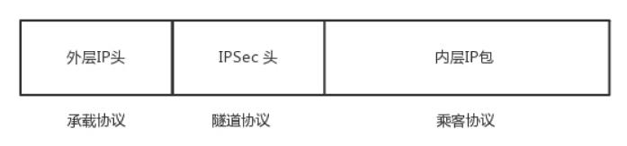
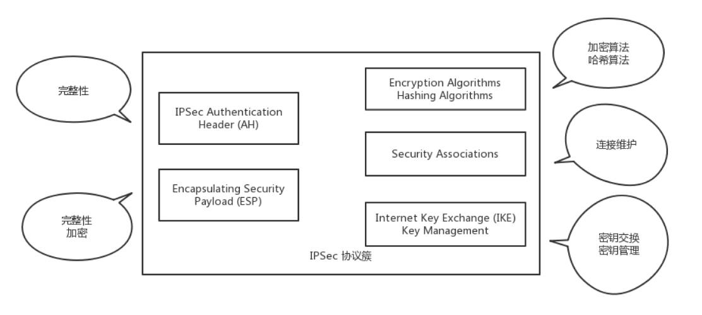
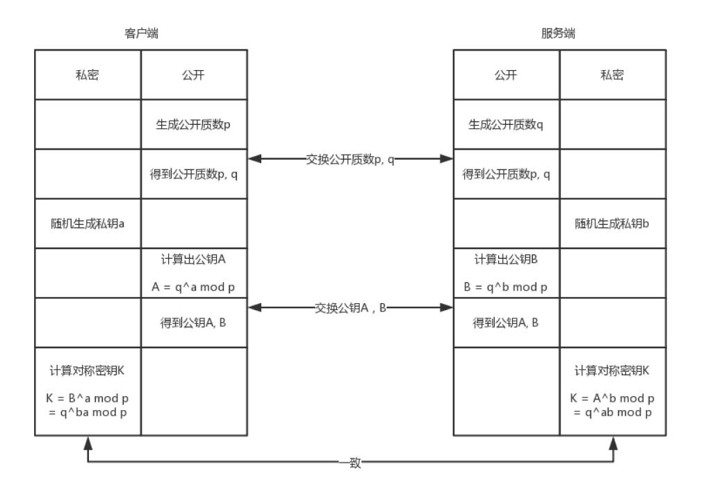

VPN
VPN：朝中有人好做官
数据中心，里面很复杂，但是有的公司有多个数据中心，需要将多个数据中心连接起来，或者需要办公室和数据中心连接起来。怎么办？
- 走公网，不安全
- 租用专线，成本高
- 使用 VPN，安全不贵

VPN，全名 Virtual Private Network，虚拟专用网，就是利用开放的公众网络，建立专用数据传输通道，将远程的分支机构、移动办公人
员等连接起来。
VPN 工作原理
VPN 通过隧道技术在公众网络上仿真一条点到点的专线，是通过利用一种协议来传输另外一种协议的技术，这里面涉及三种协议：
- 乘客协议
- 隧道协议
- 承载协议。
以 IPsec 协议为例：

IPsec VPN。这是基于 IP 协议的安全隧道协议，为了保证在公网上面信息的安全，因而采取了一定的机制保证安全性。
- 机制一：私密性，防止信息泄漏给未经授权的个人，通过加密把数据从明文变成无法读懂的密文，从而确保数据的私密性。由于 VPN 一旦建立，需
要传输大量数据，因而采取对称加密（快）。但是同样，对称加密还是存在加密秘钥如何传输的问题，这里需要用到因特网密钥交
换（IKE，Internet Key Exchange）协议。 - 机制二：完整性，数据没有被非法篡改，通过对数据进行hash运算，产生类似于指纹的数据摘要，以保证数据的完整性。
- 机制三：真实性，数据确实是由特定的对端发出，通过身份认证可以保证数据的真实性。
如何保证对方就是真正的那个人呢？
- 第一种方法就是预共享密钥，也就是双方事先商量好一个暗号，比如“天王盖地虎，宝塔镇河妖”，对上了，就说明是对的。
- 另外一种方法就是用数字签名来验证。
基于以上三个特性，组成了 IPsec VPN 的协议簇。

- AH（Authentication Header），只能进行数据摘要，不能实现数据加密。
- ESP（Encapsulating Security Payload），能够进行数据加密和数据摘要。
- IKE 组件，用于 VPN 的双方要进行对称密钥的交换。
- SA（Security Association）组件，用于 VPN 的双方对连接进行维护
IPsec VPN 的建立过程
建立过程分两个阶段。
第一个阶段，建立 IKE 自己的 SA。这个 SA 用来维护一个通过身份认证和安全保护的通道，为第二个阶段提供服务。通
过 DH（Diffie-Hellman）算法计算出一个对称密钥 K。
DH 算法是一个比较巧妙的算法。客户端和服务端约定两个公开的质数 p 和 q，然后客户端随机产生一个数 a 作为自己的私钥，服务端随机产生一
个 b 作为自己的私钥，客户端可以根据 p、q 和 a 计算出公钥 A，服务端根据 p、q 和 b 计算出公钥 B，然后双方交换公钥 A 和 B。
到此客户端和服务端可以根据已有的信息，各自独立算出相同的结果 K，就是对称密钥。但是这个过程，对称密钥从来没有在通道上传输过，
只传输了生成密钥的材料，通过这些材料，截获的人是无法算出的。

第二个阶段，建立 IPsec SA。在这个 SA 里面，双方会生成一个随机的对称密钥 M，由 K 加密传给对方，然后使用 M 进行双方接下来通信的数
据。对称密钥 M 是有过期时间的，会过一段时间，重新生成一次，从而防止被破解。
IPsec SA 里面有以下内容：
- SPI（Security Parameter Index），用于标识不同的连接
- 双方商量好的加密算法、哈希算法和封装模式
- 生存周期，超过这个周期，就需要重新生成一个 IPsec SA，重新生成对称密钥
当 IPsec 建立好，接下来就可以开始打包封装传输了。

左面是原始的 IP 包，在 IP 头里面，会指定上一层的协议为 TCP。ESP 要对 IP 包进行封装，因而 IP 头里面的上一层协议为 ESP。在 ESP 的正
文里面，ESP 的头部有双方商讨好的 SPI，以及这次传输的序列号。
接下来全部是加密的内容。可以通过对称密钥进行解密，解密后在正文的最后，指明了里面的协议是什么。如果是 IP，则需要先解析 IP 头，然后解
析 TCP 头，这是从隧道出来后解封装的过程。
有了 IPsec VPN 之后，客户端发送的明文的 IP 包，都会被加上 ESP 头和 IP 头，在公网上传输，由于加密，可以保证不被窃取，到了对端后，
去掉 ESP 的头，进行解密。

这种点对点的基于 IP 的 VPN，能满足互通的要求，但是速度往往比较慢，这是由底层 IP 协议的特性决定的。IP 不是面向连接的，是尽力而为的
协议，每个 IP 包自由选择路径，到每一个路由器，都自己去找下一跳，丢了就丢了，是靠上一层 TCP 的重发来保证可靠性。
因为 IP 网络从设计的时候，就认为是不可靠的，所以即使同一个连接，也可能选择不同的道路，这样的好处是，一条道路崩溃的时候，总有其他的
路可以走。当然，带来的代价就是，不断的路由查找，效率比较差。
和 IP 对应的另一种技术称为 ATM。这种协议和 IP 协议的不同在于，它是面向连接的。你可以说 TCP 也是面向连接的啊。这两个不同，ATM 和 IP 是
一个层次的，和 TCP 不是一个层次的。
另外，TCP 所谓的面向连接，是不停地重试来保证成功，其实下层的 IP 还是不面向连接的，丢了就丢了。ATM 是传输之前先建立一个连接，形成一个
虚拟的通路，一旦连接建立了，所有的包都按照相同的路径走，不会分头行事。
好处是不需要每次都查路由表的，虚拟路径已经建立，每个包都按相同的路径走，这样效率会高很多。但是一旦虚拟路径上的某个路由器坏了，则这个连
接就断了，什么也发不过去了，因为其他的包还会按照原来的路径走，都掉坑里了，它们不会选择其他的路径走。
多协议标签交换（MPLS，Multi-Protocol Label Switching），将两者的优点结合起来。